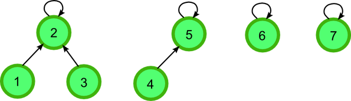

Minimum Spanning Tree: Prim's, Kruskal's Algorithm and Clustering
Let \(G=(V, E)\) be a connected, undirected graph with a real-valued weight function \(w\) defined on \(E\). If an acyclic subset \(T\in E\) that connects all of the vertices and whose total weight \(w(T)=\sum_{(u,v)\in T}w(u,v)\) is minimized, \(T\) forms a Minimum Spanning Tree.
Concepts
safe edge: An edge that may be added to \(A\) without violating the invariant that \(A\) is a subset of someminimum spanning tree.cut: Acut\((S, V-S)\) of an undirected graph \(G=(V,E)\) is a partition of \(V\).cross: We say that an edge \((u,v)\in E\)crossesthe cut \((S,V-S)\) if one of its endpoints is in \(S\) and the other is in \(V-S\).respect: If no edge in \(A\) (a subset of someminimum spanning tree)crossesthe cut, the cutrespectsa set \(A\) of edges.light edge: An edge is alight edgecrossing a cut if its weight is the minimum of any edge crossing the cut.
Prim's algorithm
In Prim's algorithm, each step adds a light edge to minimum spanning tree. The running time of the Prim's algorithm is \(O(E \log(V))\)
Implementation
def prim(agraph, start):
"""
Prim's algorithm for minimum spanning tree
Using min-heap data structure
return a minimum spanning tree
"""
# vertex of minimun spanning tree
mst_vertex = []
pq = PriorityQueue()
for v in agraph:
v.setDistance(sys.maxsize)
v.setPred(None)
start.setDistance(0)
pq.buildHeap([(v.getDistance(), v) for v in agraph])
while not pq.isEmpty():
u = pq.delMin()
mst_vertex.append(u)
for adjacent in u.getConnections():
newcost = u.getWeight(adjacent)
if adjacent in pq and newcost < adjacent.getDistance():
adjacent.setPred(u)
adjacent.setDistance(newcost)
pq.decreaseKey(adjacent, newcost)
# edges of minimum spanning tree
mst = []
for i in range(1, len(mst_vertex)):
# u, v, cost
mst.append((mst_vertex[i-1], mst_vertex[i], mst_vertex[i].getDistance()))
return mst
Prim's v.s. Dijkstra's
Prim's algorithm are similar to Dijkstra's algorithm, both of which use a priority queue. And each of them belongs to greedy algorithm. There is trivial difference when implementing:
\[\text{Prim's} p(v) = \min_{(u,v): u\in S} w(u,v)\]
\[\text{Dijkstra's} s(v) = \min_{(u,v): u\in S} \text{dist(su,u)} w(u,v)\]
Kruskal's Algorithm
In Kruskal's algorithm, always add edges in increasing weight, skipping those whose addition would create a cycle.
In order to keep track of the connected components of a minimum spanning tree when implementing Kruskal's algorithm, a disjoint-set data structure should be used. The pseudo code for MST-KRUSKAL:
mst = []
for each vertex in G:
make-set(vertex)
sort the edges of G into nondecreasing order by weight of edges
for each edge (u,v) in G:
if find-set(u) != find_set(v):
mst = mst + (u,v)
union(u,v)
return mst
If we use union-by-rank and path-compression heuristics in disjoint-set data structure, the running time of Kruskal's algorithm is \(O(E\lg V)\).
Implementation
def kruskal_mst(agraph):
"""
Return a minimum spanning tree using kruskal's algorithm
"""
# minimum spanning tree
mst = []
# disjoint set
disjoint_set = DisjointSet()
# make set
for vertex in agraph.Vertices():
disjoint_set.make_set(vertex)
# edges of the graph
edges = agraph.edges()
edges.sort(key=lambda tup: tup[2])
for u, v, cost in edges:
if disjoint_set.find_set(u) != disjoint_set.find_set(v):
mst.append((u, v, cost))
disjoint_set.union(u, v)
return mst
Clustering
Max-Spacing k clustering: Given a set of objects \(p_1, . . . , p_n\), a distance function \(d(p_i,p_j)\) specifies their similarity. \(d(p_i,p_j)\) may be an actual distance, or some abstract representation of how dissimilar of two things are.
OUR GOAL: Divide the \(n\) items up into \(k\) groups so that the minimum distance between items in different groups is maximized.
IDEA:
- we maintain clusters as a set of connected components of a graph.
- And Iteratively combine the clusters containing the two closest items by adding an edge between them.
- Stop when there are \(k\) clusters.
You'll find this is exactly Kruskal's algorithm.
Implementation
def clustering(agraph, k):
"""
Max-Spacing k clustering
Return maximum spacing of a k-clustering
and corresponding mst.
"""
# minimum spanning tree
mst = []
# disjoint set
disjoint_set = DisjointSet()
# make set
for vertex in agraph.Vertices():
disjoint_set.make_set(vertex)
# edges of the graph
edges = agraph.edges()
edges.sort(key=lambda tup: tup[2])
for u, v, cost in edges:
if len(disjoint_set) >= k:
if disjoint_set.find_set(u) != disjoint_set.find_set(v):
mst.append((u, v, cost))
max_cost = cost
disjoint_set.union(u, v)
else:
break
return max_cost, mst
Disjoint-Set Data Structure
In order to keep track of the connected components of a minimum spanning tree when implementing Kruskal's algorithm, a disjoint-set data structure should be used.
Disjoint-set data structure, also called union-find data structure, is a data structure that keeps track of a set of elements partitioned into a number of disjoint subsets.
A disjoint-set data structure supports following operations:
MAKE-SET(x)creates a new set whose only member is \(x\)UNION(x,y)unites the dynamic sets that contains \(x\) and \(y\), into a new set that is the union of these two sets.FIND-SET(x)returns the representative of the set containing \(x\).
Linked-List Implementation
Each set is represented by its own linked list. The object for each set has attributes head, pointing to the first object in the list, and tail, pointing to the last object. Each object in the linked list contains a set member, a pointer to the next object in the list, and a pointer back to the set object.

Weighted-Union Heuristic: And each linked list also includes the length of the list and we always append the shorter list onto the longer.
Using the linked-list representation of disjoint sets and the weighted-union heuristic, a sequence of \(m\) MAKE-SET, UNION, and FIND-SET, \(n\) of which are MAKE-SET operations, takes \(O(m+n\lg n)\) time.
class Node:
"""
class Node for double liked list
"""
def __init__(self, elem):
self.prev = None
self.elem = elem
self.next = None
def __hash__(self):
return hash(self.elem)
def __eq__(self, x, y):
return x.elem == y.elem
class LinkedList:
def __init__(self):
self.head = None
self.tail = None
self.length = 0
def add(self, node):
"""
add element to disjoint set
"""
if self.head:
node.prev = self
self.tail.next = node
self.tail = node
else:
self.head = node
self.tail = node
node.prev = self
self.length += 1
def __len__(self):
return self.length
def set_length(self, l):
self.length = l
def __iter__(self):
next_node = self.head
while next_node:
yield next_node
next_node = next_node.next
class DisjointSet:
def __init__(self):
self.sets = []
def make_set(self, node):
"""
creates a new set whose only member (and thus representative) is x.
"""
alist = LinkedList()
alist.add(node)
self.sets.append(alist)
return alist
def union(self, nodex, nodey):
"""
unites the dynamic sets that contain x and y, into a new set that is the union of these two sets.
"""
listx = self.find_set(nodex)
listy = self.find_set(nodey)
# append the shorter list onto the longer.
if len(listx) > len(listy):
listx.tail.next = listy.head
for y in listy:
y.prev = listx
listx.tail = listy.tail
listx.set_length = len(listx) + len(listy)
self.sets.remove(listy)
else:
listy.tail.next = listx.head
for x in listx:
x.prev = listy
listy.tail = listx.tail
listy.setlength = len(listx) + len(listy)
self.sets.remove(listx)
def find_set(self, node):
"""
returns the representative of the set containing x
"""
return node.prev
def connected_components(self):
for link_list in self.sets:
print('( ', end='')
for node in link_list:
print(node.elem, end=' ')
print(') ', end='')
def __len__(self):
return len(self.sets)
Forest Implementation of Disjoint-Set
Disjoint-set forest, a faster implementation of disjoint sets, uses rooted trees represent sets, with each node containing one member and each tree representing one set. In a disjoint-set forest, each member points only to its parents. The root of each tree contains the representative and is its own parent.

Union by Rank: For each node, we maintain a rank, which is an upper bound on the hight of the node. We make the root with smaller rank point to the root with larger rank during a Union operation.
Path Compression: When we call find_set, we traverse the path from a node up to its root. Instead of just returning root, we will link all the nodes in this path directly to root.

class DisjointSet:
"""
Disjoint set data structure
"""
def __init__(self):
self.sets = []
self.parent = {}
self.rank = {}
def make_set(self, node):
"""
creates a new set whose only member (and thus representative) is x.
"""
self.parent[node] = node
self.sets.append(node)
self.rank[node] = 0
def union(self, x, y):
"""
unites the dynamic sets that contain x and y, into a new set that is the union of these two sets.
"""
x_root = self.find_set(x)
y_root = self.find_set(y)
if x_root == y_root:
return
if self.rank[x_root] > self.rank[y_root]:
self.parent[y_root] = x_root
else:
self.parent[x_root] = y_root
if self.rank[x_root] == self.rank[y_root]:
self.rank[y_root] = self.rank[y_root] + 1
def find_set(self, x):
"""
returns the representative of the set containing x
"""
if self.parent[x] != x:
self.parent[x] = self.find_set(self.parent[x])
return self.parent[x]
Reference
- Cormen, Leiserson, Rivest, and Stein. 2009. Introduction to Algorithms (3rd edition)
- Disjoint-set Data Structure MIT
链表
- 线性表
- 单向链表
- ，是一种线性表，不像顺序表一样连续存储数据，而是在每一个节点（数据存储单元）里存放下一个节点的位置信息（即地址）。
线性表
一组序列元素的组织形式，可以将其抽象为线性表。一个线性表是某类元素的一个集合，还记录着元素之间的一种顺序关系。线性表是最基本的数据结果一直，在实际程序中应用非常广泛，它还将常被用来做更复杂的数据结构的实现基础。
根据线性表的存储方式，分为两种模型：
- 顺序表，将元素顺序地放在一块连续的存储区里，元素间的顺序关系由它们的存储顺序自然表示。
- 链表，将元素存放在通过链接构造起来的一系列存储块中,包括单项列表，双向列表，单向循环列表
单向链表
节点：包括表元素域，和下一个节点连接域。
尾节点的连接域指向一个空值。
补充：python中变量标识的本质
变量标识保存变量的地址。因此不用指定变量的类型，在程序运行过程中也可以改变变量类型。
与C语言不同：C语言需要申明变量类型。
示意

代码
class Node(object):
"""节点"""
def __init__(self, elem):
self.elem = elem
self.next = None
class SingleLinkList(object):
"""单链表"""
def __init__(self, node=None):
self.__head = node
def is_empty(self):
"""链表是否为空"""
return self.__head == None
def length(self):
"""链表长度"""
# cur游标，用来移动遍历节点
cur = self.__head
# count记录数量
count = 0
while cur != None:
count += 1
cur = cur.next
return count
def travel(self):
"""遍历整个链表"""
cur = self.__head
while cur != None:
print(cur.elem, end=" ")
cur = cur.next
print("")
def add(self, item):
"""链表头部添加元素，头插法"""
node = Node(item)
node.next = self.__head
self.__head = node
def append(self, item):
"""链表尾部添加元素, 尾插法"""
node = Node(item)
if self.is_empty():
self.__head = node
else:
cur = self.__head
while cur.next != None:
cur = cur.next
cur.next = node
def insert(self, pos, item):
"""指定位置添加元素
:param pos 从0开始
"""
if pos <= 0:
self.add(item)
elif pos > (self.length()-1):
self.append(item)
else:
pre = self.__head
count = 0
while count < (pos-1):
count += 1
pre = pre.next
# 当循环退出后，pre指向pos-1位置
node = Node(item)
node.next = pre.next
pre.next = node
def remove(self, item):
"""删除节点"""
cur = self.__head
pre = None
while cur != None:
if cur.elem == item:
# 先判断此结点是否是头节点
# 头节点
if cur == self.__head:
self.__head = cur.next
else:
pre.next = cur.next
break
else:
pre = cur
cur = cur.next
def search(self, item):
"""查找节点是否存在"""
cur = self.__head
while cur != None:
if cur.elem == item:
return True
else:
cur = cur.next
return False
单项链表与顺序表的对比
- 顺序表随机读取，空间开销小的优点，但存储空间必须连续
- 链表由于增加了结点的指针域，空间开销比较大
- 链表对存储空间的使用要相对灵活，充分利用离散的存储空间
| 操作 | 链表 | 顺序表 |
|---|---|---|
| 访问元素 | O(n) | O(1) |
| 在头部插入/删除 | O(1) | O(n) |
| 在尾部插入/删除 | O(n) | O(1) |
| 在中间插入/删除 | O(n) | O(n) |
双向链表
节点：前驱区、数据区、后继区

class Node(object):
def __init__(self, elem):
self.prev = None
self.elem = elem
self.next = None
class DobuleLinkList(object):
"""
双链表
"""
def __init__(self, node = None):
self.__head = node # 私有属性
def is_empty(self):
"""
链表是否为空
"""
return self.__head is None
def length(self):
"""
链表长度
"""
current = self.__head # current 游标，用来移动遍历节点
count = 0 # count 记录数量
while current != None:
count += 1
current = current.next
return count
def travel(self):
"""
遍历整个链表
"""
current = self.__head # current 游标，用来移动遍历节点
lists = []
while current != None:
lists.append(current.elem)
current = current.next
print(lists)
def add(self, item):
"""
链表头部添加元素
"""
second_elem = self.__head
self.__head = Node(item)
self.__head.next = second_elem
second_elem.prev = self.__head
def append(self, item):
"""
链表尾部添加元素
item: 具体的数据，不是class Node
"""
node = Node(item)
# 判断链表是否为空
if self.is_empty():
self.__head = node
else:
current = self.__head
while current.next != None: # 遍历，找到节点尾部
current = current.next
current.next = node
node.prev = current
def insert(self, pos, item):
"""
指定位置添加元素
pos: 从0开始索引
"""
if pos <= 0:
self.add(item)
elif pos >= self.length()-1:
self.append(item)
else:
count = 0
current = self.__head
while count < pos:
current = current.next
count += 1
previous = current.prev
nodes = Node(item)
previous.next = nodes
nodes.prev = previous
nodes.next = current
current.prev = nodes
def remove(self,item):
"""
删除节点
"""
current = self.__head
if current.elem == item:
self.__head = current.next
if current.next:
current.next.prev = None
print('Remove the element %d'%item)
return None
else:
while current != None:
if current.elem == item:
current.prev.next = current.next
current.next.prev = current.prev
print('Remove the element %d'%item)
return None
else:
current = current.next
print("Can't find it")
def search(self,item):
"""
查找节点是否存在
"""
current = self.__head
while current != None:
if current.elem == item:
print('Find element %d !'% item)
return True
else:
current = current.next
return False
单向循环列表

class Node(object):
"""
节点
"""
def __init__(self, elem):
self.elem = elem
self.next = None
class SingleCycleLinkList(object):
"""
单链表
"""
def __init__(self, node = None):
self.__head = node # 私有属性
if node:
node.next = node #设置回环
def is_empty(self):
"""
链表是否为空
"""
return self.__head is None
def length(self):
"""
链表长度
"""
if self.is_empty():
return 0
else:
current = self.__head # current 游标，用来移动遍历节点
count = 1 # count 记录数量
while current.next != self.__head:
count += 1
current = current.next
return count
def travel(self):
"""
遍历整个链表
"""
current = self.__head # current 游标，用来移动遍历节点
lists = []
if current: # 如果链表有元素
lists.append(current.elem)
current = current.next
while current is not self.__head:
lists.append(current.elem)
current = current.next
print(lists)
def add(self, item):
"""
链表头部添加元素
"""
if self.is_empty():
self.__init__(Node(item))
else:
former_head = self.__head
current = self.__head
while current.next is not self.__head:
current = current.next
current.next= Node(item)
current.next.next = former_head
self.__head = current.next
def append(self, item):
"""
链表尾部添加元素
item: 具体的数据，不是class Node
"""
node = Node(item)
# 判断链表是否为空
if self.is_empty():
self.__init__(node)
else:
current = self.__head
while current.next != self.__head: # 遍历，找到节点尾部
current = current.next
current.next = node
node.next = self.__head
def insert(self, pos, item):
"""
指定位置添加元素
pos: 从0开始索引
"""
if pos <= 0:
self.add(item)
elif pos >= self.length()-1:
self.append(item)
else:
count = 0
current = self.__head
while count < pos:
previous = current
current = current.next
count += 1
nodes = Node(item)
previous.next = nodes
nodes.next = current
def remove(self,item):
"""
删除节点
"""
# 如果是空单向链表
if self.is_empty():
print("Can't find item %d" % item)
return False
# 如果单向链表只有一个元素
if self.length() == 1:
if self.__head.elem == item:
self.__head = None
print('Remove the element %d'%item)
return True
else:
print("Can't find item %d" % item)
return False
# 通用
current = self.__head
# 删除第一个元素（头节点）
if current.elem == item:
former_head = current
self.__head = current.next
print('Remove the element %d'%item)
while current.next is not former_head:
current = current.next
current.next = self.__head
return None
else:
while current.next != self.__head:
if current.elem == item:
previous.next = current.next
print('Remove the element %d'%item)
return None
else:
previous = current
current = current.next
# 处理尾部元素
if current.elem == item:
previous.next = self.__head
print('Remove the element %d'%item)
return None
print("Can't find item %d" % item)
def search(self,item):
"""
查找节点是否存在
"""
if self.is_empty():
return False
current = self.__head
while current.next is not self.__head:
if current.elem == item:
print('Find element %d'% item)
return True
else:
current = current.next
if current.elem == item:
return True
print('Find element %d'% item)
return False

Copyright © 2015 Powered by MWeb, Theme used GitHub CSS.